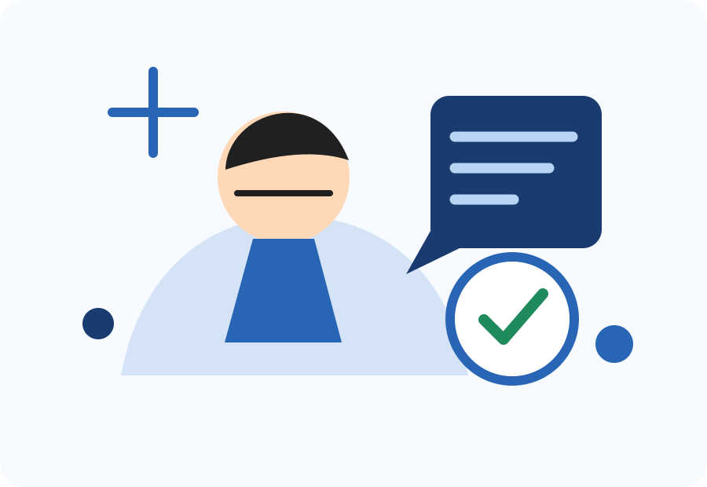

Como não usar a IA de maneira consumista
Usar bem não significa pedir tudo pronto. Significa criar um ciclo de pergunta, explicação, verificação e autoria.

Faça a ferramenta trabalhar a favor do seu aprendizado
Não copie respostas sem compreender. Peça que conceitos sejam explicados em níveis diferentes, compare fontes e reescreva com suas próprias palavras. Se a tarefa for importante, mantenha o registro do que foi consultado e de quais decisões foram suas.
- Utilize a IA como apoio, não como substituta do raciocínio.
- Verifique dados, datas, links e afirmações antes de compartilhar.
- Desenvolva ideias próprias antes de solicitar alternativas.
- Proteja informações confidenciais, pessoais e estratégicas.
- Aprenda com a explicação e tente resolver novamente sem assistência.
Prompts que ajudam a pensar
“Explique este conceito como se eu estivesse começando.
Depois faça três perguntas para verificar se entendi.”
“Aponte lacunas e pressupostos nesta ideia. Não dê uma
solução final; ajude-me a formular as próximas
perguntas.”
Antes de apertar enviar
“Quais partes da minha solicitação podem conter dados
confidenciais? Sugira como anonimizar o texto antes de
analisá-lo.”
“Liste quais afirmações desta resposta precisam de
verificação externa e indique que tipo de fonte seria
adequada.”
Autoria não é um detalhe
A UNESCO defende uma abordagem centrada nas pessoas, com proteção da privacidade e validação ética. A ferramenta pode acelerar o caminho, mas compreender, decidir e responder pelo resultado são tarefas humanas.